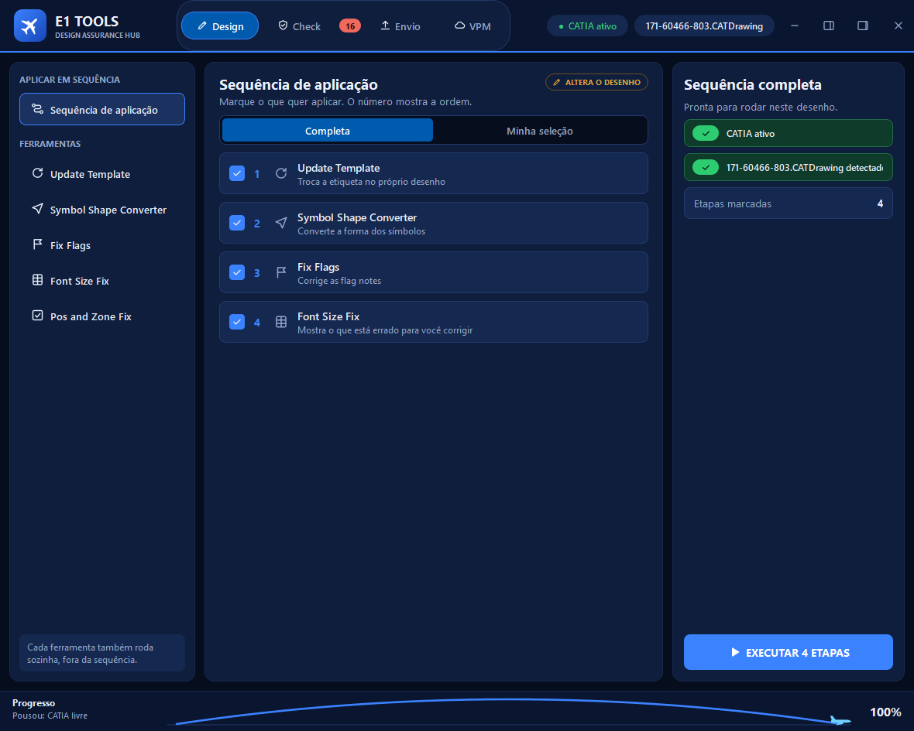
Sobre os prints. As imagens são do HUB de verdade, preenchidas com dados de exemplo (desenho 171-60466-803, Part List e lote do VPM inventados). Nas telas do VPM aparece só a prévia, porque o VPM só abre na rede da empresa.
python main_qt.py
O HUB pode ser aberto antes ou depois do CATIA. Ele percebe sozinho quando o CATIA abre e qual documento está ativo, a cada 2 segundos. Desenho aberto pelo VPM também é reconhecido: o HUB olha o tipo do documento no CATIA, e não só a extensão do nome.
| Etiqueta | Significado |
|---|---|
| Muda o desenho aberto. Confira e salve depois. | |
| SÓ CONFERE | Só lê. O desenho não muda. |
| CRIA ARQUIVOS | Grava arquivos novos em outra pasta. O documento aberto não é dividido. |
| ALTERA O VPM | Cria PNs ou envia arquivos para o VPM. Não dá para desfazer pelo HUB. |
| Parte da tela | Para que serve |
|---|---|
| Abas no alto (Design, Check, Envio, VPM) | Trocam o grupo de ferramentas. O número vermelho ao lado de Check é o total de itens para revisar nos checks desta sessão. |
| Chip "CATIA ativo" | Verde: CATIA aberto e livre. Amarelo "CATIA ocupado": o HUB está trabalhando nele. Vermelho "CATIA fechado": o HUB não achou o CATIA. |
| Chip com o nome do documento | O documento ativo no CATIA. "Nenhum desenho" quando não há. |
| Lista à esquerda | As ferramentas da aba. O número em cada uma é o que ficou para revisar no último resultado. |
| Faixa "Progresso", embaixo | O avião anda conforme a ferramenta avança. "Pousou: CATIA livre" quando termina. |
| Botões no canto direito | Minimizar, modo canto, modo só ícones e fechar. Veja modos de janela. |
Sem CATIA ou sem desenho, cada ferramenta mostra o que falta e um botão PROCURAR DE NOVO. Não é preciso clicar: o HUB libera a ferramenta assim que o documento certo fica ativo.
| CATIA fechado | Documento ativo não é um desenho |
|---|---|
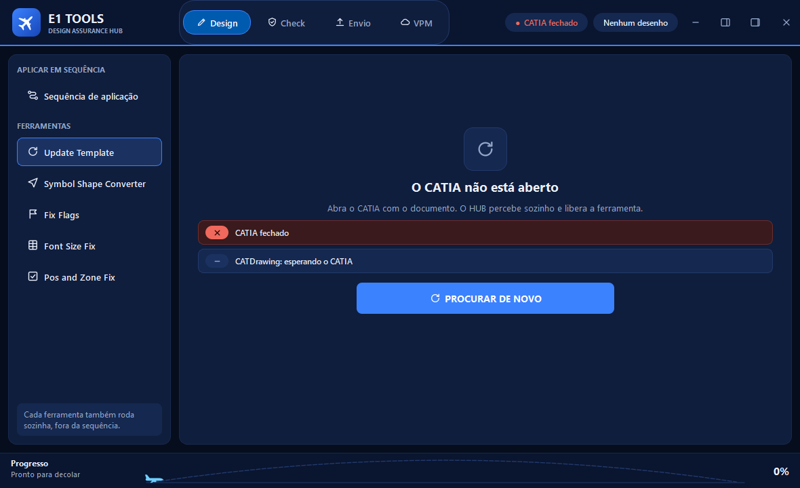 |
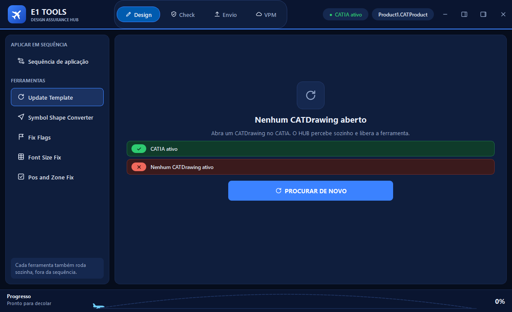 |
| Modo | Como entrar | Como fica |
|---|---|---|
| Normal | Padrão ao abrir | Janela de 1180 × 720 com tudo visível. Pode ser arrastada pelo cabeçalho. |
| Canto | Botão com dois painéis, no alto à direita | Coluna estreita na borda direita da tela, sempre por cima do CATIA. As abas e ferramentas viram uma faixa de ícones (D, C, E, V e os ícones de cada ferramenta). As listas mostram só as colunas principais. Clique de novo no mesmo botão para voltar ao normal. |
| Só ícones | Botão com o quadrado, no alto à direita | Uma barra fina no canto da tela, sempre por cima. Clicar no ícone de uma ferramenta abre um cartão com o resumo dela e os botões EXECUTAR e ABRIR NO CANTO. Clicar de novo no mesmo ícone fecha o cartão. Os dois botões no pé da barra vão para o modo canto ou para o normal. |
| Modo canto | Só ícones | Cartão no modo só ícones |
|---|---|---|
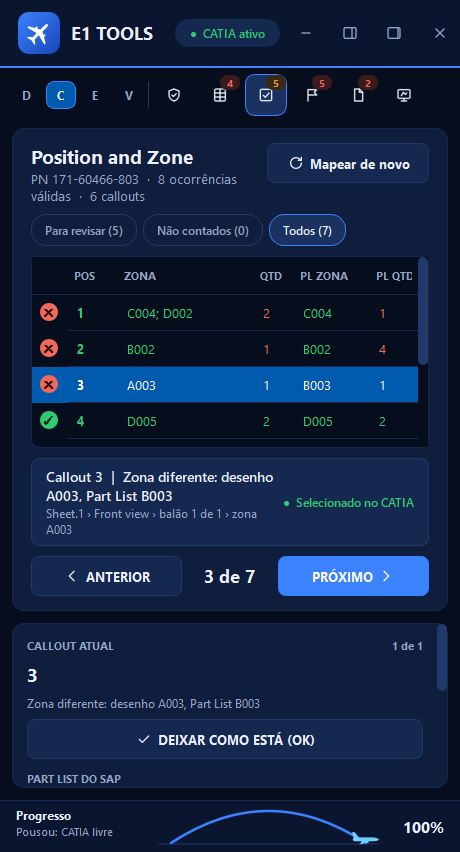 |
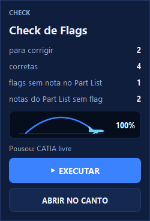 |
O botão EXECUTAR do cartão faz o mesmo que o botão principal da tela da ferramenta.
Ao fechar o HUB, ele tira a seleção que deixou no CATIA e religa alertas, tela e interação do CATIA. Com um lote do VPM rodando, o HUB não fecha: interrompa o lote antes.
Todas as ferramentas desta aba alteram o desenho aberto. Salve uma cópia antes. Cada uma roda sozinha ou junto com as outras na Sequência de aplicação.
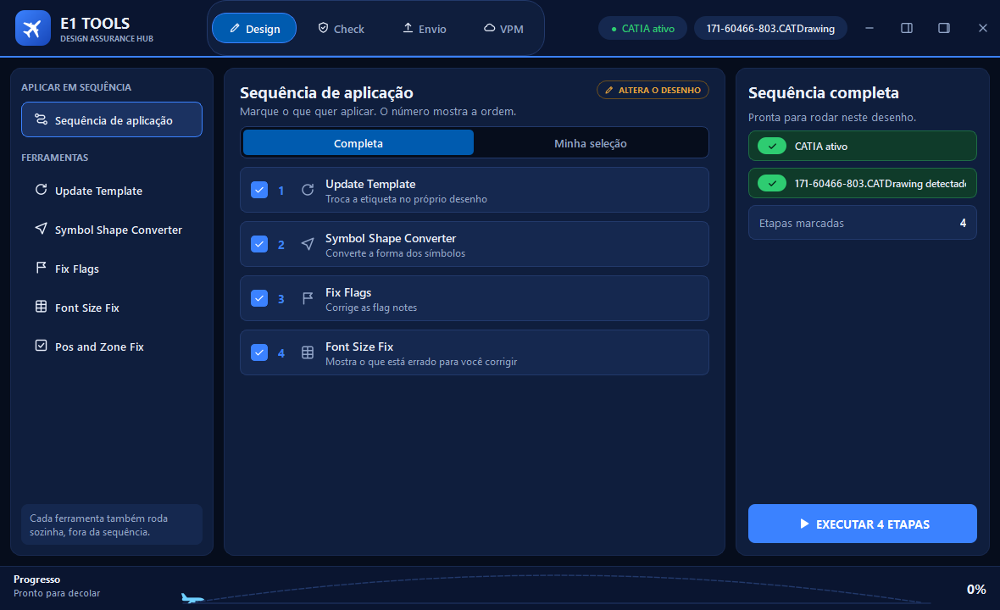
| Em andamento | Concluída |
|---|---|
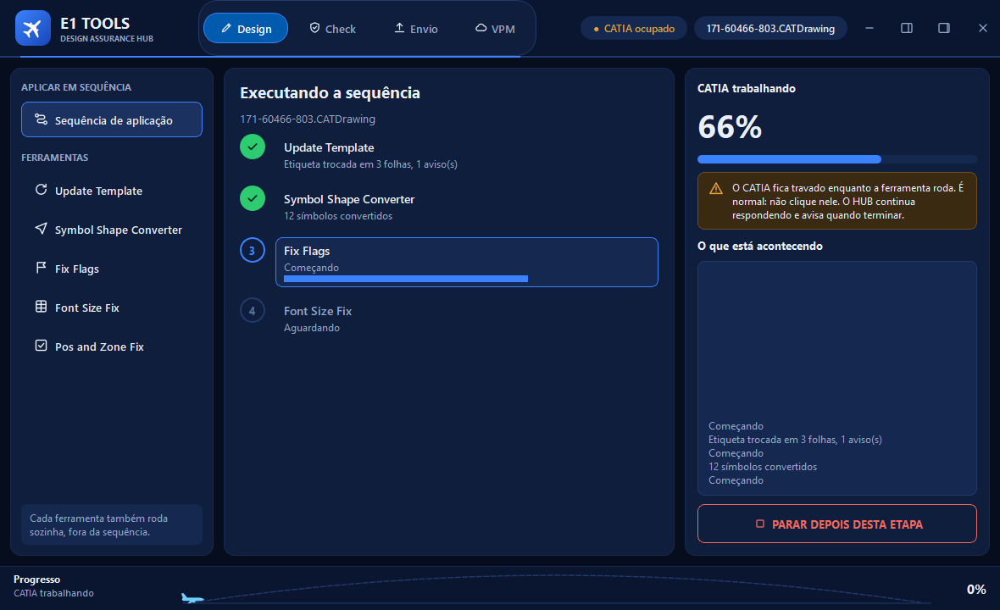 |
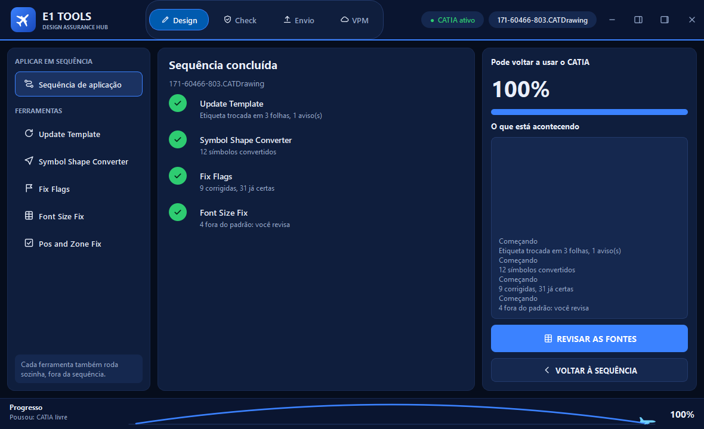 |
| Etapa | O que faz |
|---|---|
| Update Template | Troca o template no próprio desenho. Se o formato não for detectado, abre uma janela pedindo o formato. Se você escolheu formatos à mão na tela do Update Template, a sequência usa essa escolha. |
| Symbol Shape Converter | Converte a ponta dos leaders dos textos. |
| Fix Flags | Corrige as flags. Na sequência não pergunta antes: clicar em EXECUTAR já é a confirmação. |
| Font Size Fix | Não corrige nada sozinho. Só analisa e deixa a lista pronta para você revisar. |
O resultado detalhado de cada etapa também fica na tela da própria ferramenta (Update Template, Symbol Shape, Fix Flags, Font Size Fix).
ZONE, ZONE A0, ZONES_A1_SHT1 e parecidas) e cola as do template.
Uma vista sua com "ZONE" no meio do nome continua intacta;1/total e as outras só o próprio número; o
parâmetro No_of_Sheets recebe o total de folhas.\\nfscad05.sjk.emb\dmuv5\smarteam\b01\v5\DLNames\START_UP\, arquivos
E1_DRW_TEMPLATE_<formato>_R00.CATDrawing. Formatos aceitos: 3A0, A0, A1, A2, A3 e E3.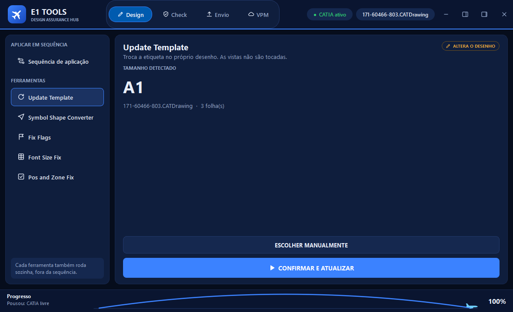
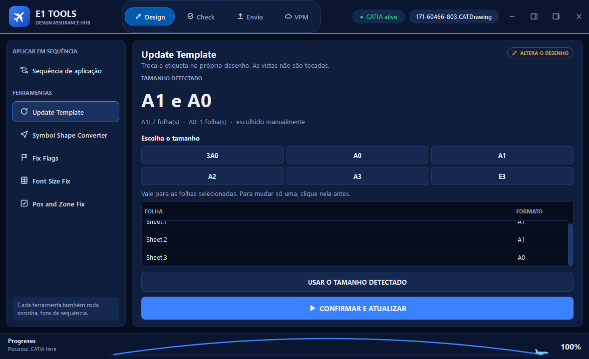
Quando nenhuma folha tem o formato no Background, a escolha manual já abre sozinha. Se o formato da primeira folha não for achado na hora de converter, o HUB pede numa janela ("Definição de Formato"): digite 3A0, A0, A1, A2, A3 ou E3. Cancelar essa janela cancela a conversão sem mudar nada.
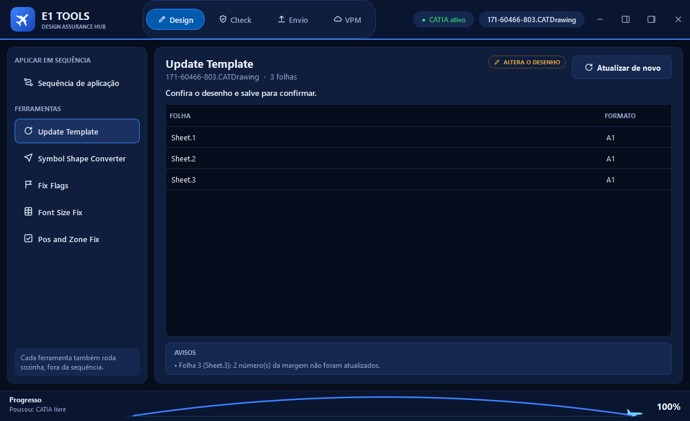
Resultado: a lista das folhas com o formato aplicado, a frase "Confira o desenho e salve para confirmar" e, se houver, os AVISOS. Depois da conversão a prévia é lida de novo.
| Aviso | O que significa |
|---|---|
| Folha N (nome): formato não identificado, usado X. | A folha não tinha formato no Background e recebeu o da primeira folha. Confira se é o certo. |
| Folha N (nome): campo SHEET/OF não encontrado, número não atualizado. | O campo de número de folha não foi achado na legenda dessa folha. Preencha à mão. |
| Folha N (nome): N número(s) da margem não foram atualizados. | Alguns números da margem ficaram sem a dezena da folha. Confira a margem. |
| Folha N: não foi possível numerar a grade X. | A grade de zonas dessa folha ficou sem a dezena. |
| Parâmetro X não existe no desenho: o campo da legenda ficou com o valor do template. | O desenho não tem esse parâmetro. O campo mostra o valor do template. |
| Folha N: o campo ligado a X não foi achado depois de colar… | Um campo da legenda não foi refeito e pode ter ficado ligado ao template. Confira em Edit › Links. |
| Nenhum texto do template está ligado a No_of_Sheets… | A numeração das folhas não foi atualizada. |
| Numeração da margem não encontrada no template… | As margens ficaram sem a dezena da folha. |
| Parâmetro No_of_Sheets não encontrado ou não editável. | O total de folhas não foi gravado no parâmetro. |
| Mensagem | O que fazer |
|---|---|
| Pasta dos templates inacessível / Não foi possível ler a pasta dos templates | A rede está fora ou a pasta mudou. A mensagem mostra a pasta pesquisada. |
| Template não encontrado para o formato X | Não há template desse formato na pasta. Escolha outro formato ou avise quem mantém os templates. |
| O template já está aberto… Feche-o sem salvar e execute novamente. | O template está aberto numa janela do CATIA. Feche sem salvar. Se ele estiver carregado sem janela (depois de uma conversão anterior), isso é normal e não bloqueia. |
| Falha na execução… "O desenho pode ter ficado parcialmente convertido. Feche-o SEM SALVAR e abra novamente" | O erro aconteceu no meio da troca. Não salve: feche, abra de novo e repita. |
| Formato inválido | O formato digitado na janela não é um dos aceitos. |
update_vinculos.txt (veja a seção 8) mostra
o que cada campo da legenda achou na última conversão.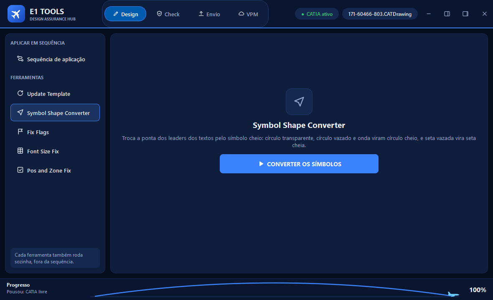
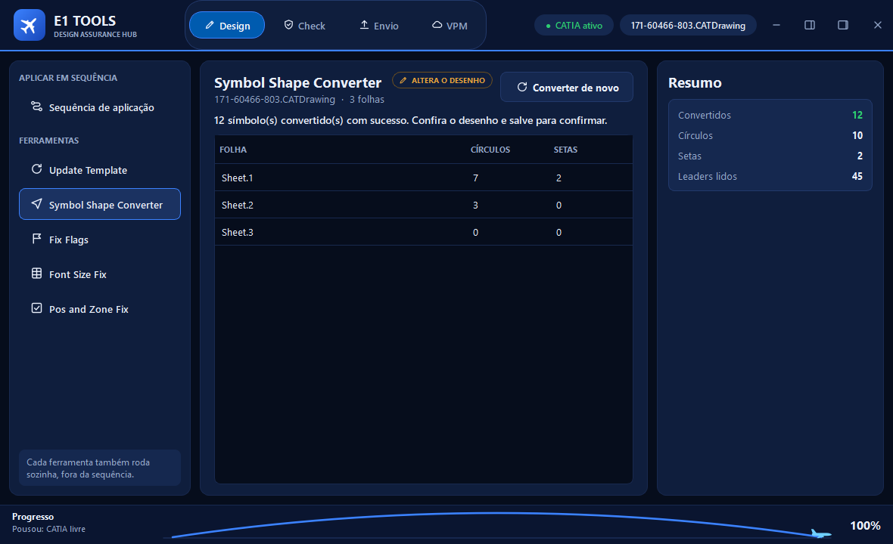
Flags reconhecidas: Right Flag, Left Flag, Both Flag, flags fixas com cadeado e flags aplicadas pelo Text Editor (também quando só parte do texto tem a flag).
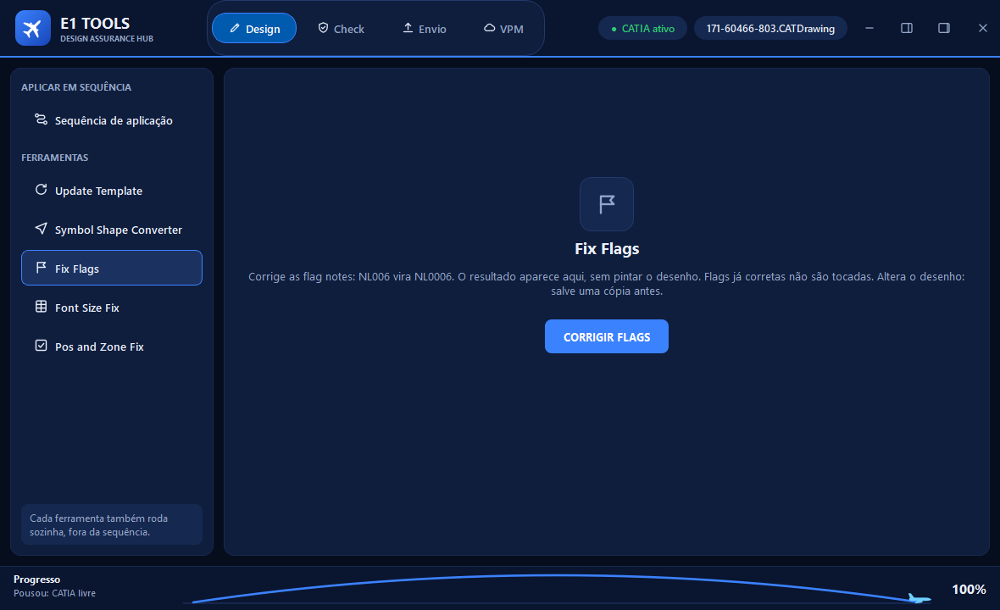
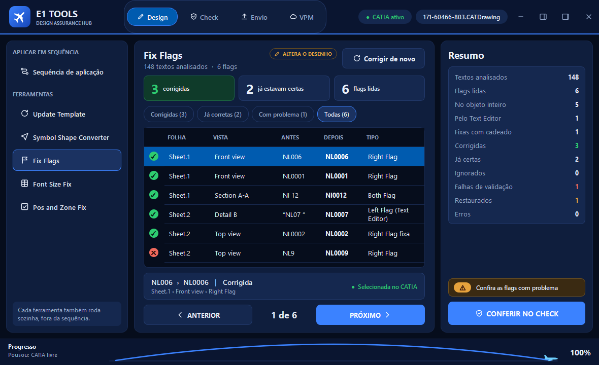
| Resultado | Significado |
|---|---|
| Corrigida | O código foi trocado e conferido. |
| Já correta | Já estava no padrão. Não foi tocada. |
| Falhou, texto restaurado | A troca falhou e o texto voltou a ser o que era. Corrija à mão. |
| Falhou, não restaurada | A troca falhou e o texto não pôde voltar. Confira essa flag no CATIA. |
| Erro | O CATIA recusou a leitura ou a gravação dessa flag. |
Resumo à direita: textos analisados, flags lidas, no objeto inteiro, pelo Text Editor, fixas com cadeado, corrigidas, já certas, ignorados (texto com flag que não tem um código de letras e números, e por isso fica como está), falhas de validação (a releitura não bateu com o esperado), restaurados e erros. Embaixo: "Pode voltar a usar o CATIA" ou "Confira as flags com problema".
Se der erro no meio: aparece "O fix foi interrompido", com o número e a descrição do erro, e "O que aparece abaixo já foi alterado no desenho". A lista mostra o que já foi mudado até ali.
Padrão de tamanho por formato (o formato é lido no Background de cada folha):
| Formato | Tamanhos aceitos |
|---|---|
| A0, E0, E3, 3A0 | 0,197" e 0,277" |
| A1, A3 | 0,17" e 0,25" |
| A2 | 0,108" e 0,193" |
| A4 | 0,07" e 0,125" |
O que fica de fora: Main View, Background, a grade de zonas do template, vistas ocultas e itens ocultos. Cotas não são conferidas no CATIA V5R20, que não informa o tamanho da cota; se uma cota aparecer, a situação dela é "Cota: corrija no CATIA". Vista travada é destravada só durante a troca e travada de novo, mesmo se a troca falhar.
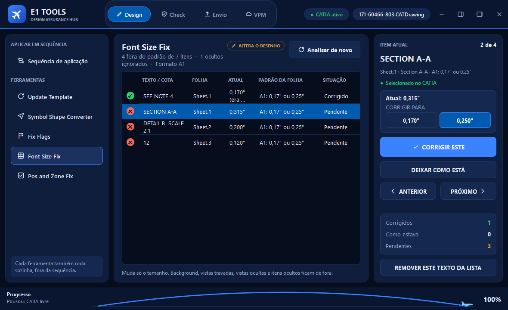
| Situação | Significado |
|---|---|
| Pendente | Ainda não decidido. |
| Corrigido | Tamanho trocado e conferido. A coluna ATUAL mostra o novo e "(era …)". |
| Como estava | Você escolheu deixar como está. Ainda dá para corrigir depois. |
| Falhou | O CATIA não aceitou o tamanho (por exemplo "O CATIA não aceitou o tamanho: ficou X"). Tente de novo ou corrija à mão. |
| Cota: corrija no CATIA | Cotas não são corrigidas pelo HUB. |
O resumo embaixo conta Corrigidos, Como estava e Pendentes. O texto no alto informa quantos itens ocultos foram ignorados e quantos você removeu da lista.
Por que mover: a zona de um callout vem do lugar do balão na folha. Corrigir a zona é mover o balão.
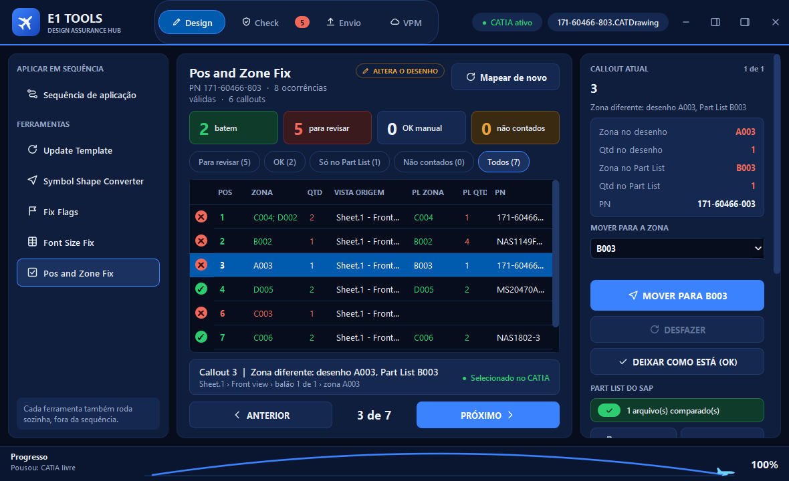
| Situação | Mensagem |
|---|---|
| O número é sublinhado, não balão | "Só o balão define a zona: este número é sublinhado." |
| A folha não tem grade de zonas lida | "Esta folha não tem zonas mapeadas." |
| O Part List pede zona de outra folha | "O Part List pede X, que não é desta folha." |
| O balão já está na zona escolhida | "O balão já está na zona X." |
| O CATIA não informou a posição da vista | "Não dá para mover por zona." |
| Depois de mover, a zona lida não bateu | "O balão ficou na zona X, e não na Y. Voltei para onde estava." |
| A leitura ficou velha (desenho mudou) | "O balão não está mais na leitura do desenho. Mapeie de novo." |
| Vista travada | Não move. Destrave a vista no CATIA se precisar mover. |
Se a posição já bate em outro balão do mesmo número, o HUB não sugere mover os outros: eles só mostram onde a peça aparece. CONFERIR NO CHECK volta para a tela do Check com a tabela atualizada.
Nada nesta aba altera o desenho. As conferências só leem, e a navegação só seleciona e enquadra.
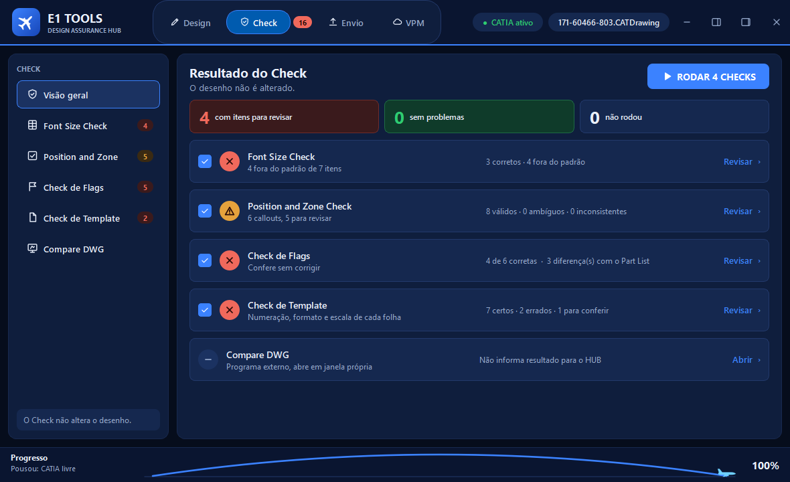
| Marca | Significado |
|---|---|
| Verde (✓) | Sem problemas. |
| Vermelho (✕) | Tem itens para corrigir. |
| Amarelo (!) | Tem itens para conferir. No Position and Zone, aparece também quando falta carregar o Part List: "Sem Part List: zona e quantidade não foram comparadas". |
| Cinza (–) | Ainda não rodou nesta sessão. |
Os cartões no alto contam quantos checks têm itens para revisar, quantos estão sem problemas e quantos não rodaram. Nada aqui é estimado: só aparece o que de fato rodou. O Compare DWG é um programa à parte e não informa resultado para o HUB; Abrir › só o abre.
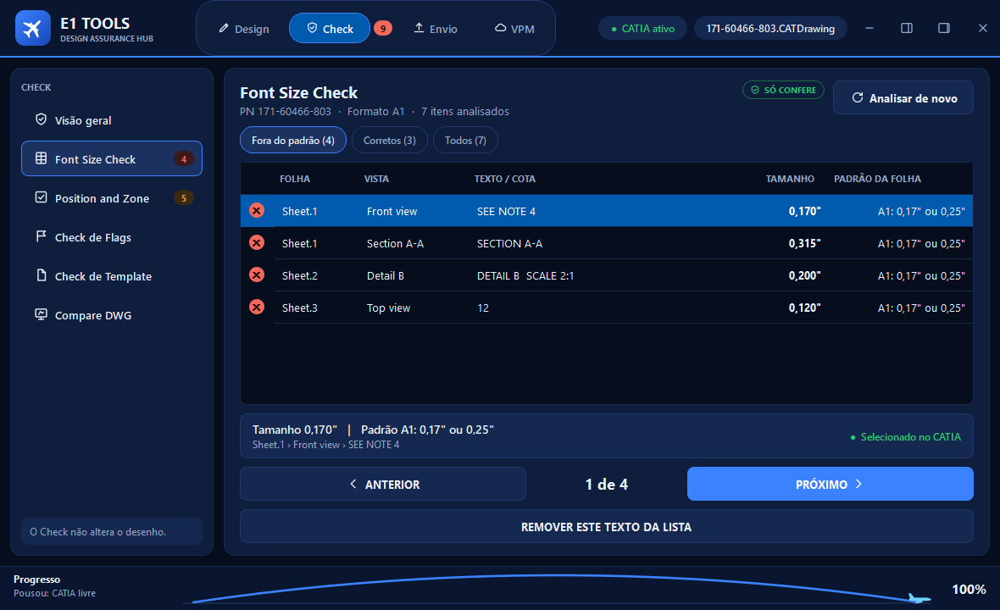
Resultado: PN, formato, itens analisados; para cada item a folha, a vista, o texto, o TAMANHO em polegadas e o PADRÃO DA FOLHA. Itens ocultos fora do padrão não entram na lista; o total ignorado aparece no Font Size Fix. Sem nada fora do padrão, a tela diz "Nenhum item fora do padrão" e mostra os padrões usados.
Para corrigir, use o Font Size Fix.
| Logo depois de mapear, sem Part List | Com o Part List carregado |
|---|---|
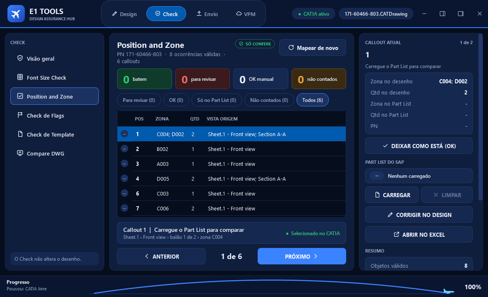 |
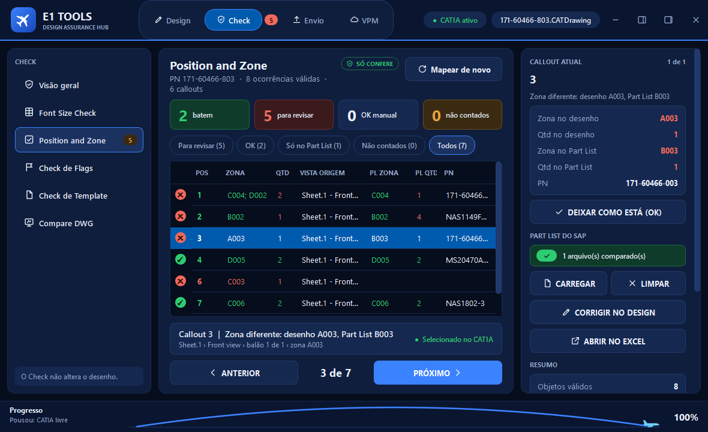 |
| Coluna | Conteúdo |
|---|---|
| Marca | Verde: bate. Vermelho: para revisar. Ciano: OK manual. Cinza: sem Part List para comparar. |
| POS | Número da posição. Vermelho se não está no Part List. |
| ZONA | Zona do balão no desenho. Com mais de um balão, todas as zonas (C004; D002). |
| QTD | Quantidade somada no desenho. |
| VISTA ORIGEM | Folha e vista do balão. |
| PL ZONA / PL QTD / PN | O que o Part List diz para essa posição. Só aparecem com o Part List carregado. |
Verde ou vermelho em cada célula mostra o que bate e o que não bate.
Situação de cada linha (aparece embaixo da tabela e no painel do callout):
| Situação | Significado |
|---|---|
| Posição, zona e quantidade batem com o Part List | Tudo certo. |
| Zona diferente: desenho X, Part List Y | O balão está em outra zona. Com mais de uma zona, no desenho ou no SAP, basta uma bater para ficar verde. |
| Quantidade diferente: desenho X, Part List Y | A soma das quantidades do desenho não bate. |
| Não está no Part List | O balão existe no desenho e a posição não existe no Part List. |
| Está no Part List e não tem balão no desenho | Filtro "Só no Part List". Não tem para onde navegar. |
| (motivo), não contabilizado | Filtro "Não contados": texto ambíguo (grupo de balões) ou com moldura inconsistente, que ficou fora da conta. Confira à mão. |
| Carregue o Part List para comparar | Ainda sem Part List. |
| OK manual, por (usuário) no (Check ou Design) | Você marcou OK. |
Como a zona e a quantidade são calculadas (para entender um resultado estranho):
ZONES_A1_SHT1 e parecidas) serve de reserva;2 PL, 4 PLACES, 2 REQD), entra na
conta. Quantidades indicadas por chave também são reconhecidas.| Aviso | O que fazer |
|---|---|
| O CATIA não informou a posição destas vistas. Os callouts delas ficaram sem zona (N/A) | Os callouts dessas vistas aparecem com zona N/A. Confira à mão. A causa ainda não é conhecida. |
| O CATIA não informou a posição destes callouts… | Idem, para callouts soltos. |
| Não achei a grade de zonas destas folhas… | A folha não tem margem nem grade reconhecível. Os balões ficaram sem zona. |
| Nestas folhas a margem não fechou nos dois lados e a zona saiu por um caminho de reserva. Confira um balão de cada | A zona provavelmente está certa, mas confira um balão de cada folha citada. |
| Há folhas com o mesmo nome… | Renomeie as folhas para navegar e mover sem confusão. |
Todos esses avisos terminam com o caminho do arquivo poszone_grade.txt, que mostra de onde saiu a grade
de cada folha e a posição de cada balão (veja a seção 8).
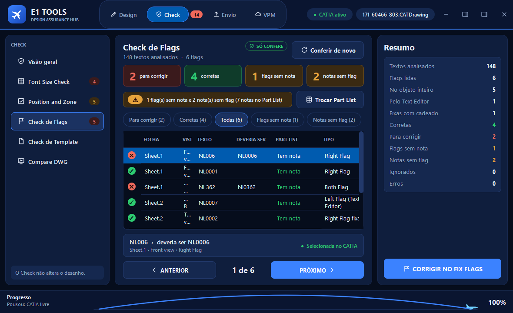
O filtro Flags sem nota mostra as flags do desenho cujo código não está na DWG_NOTES. A coluna PART LIST fica "Sem nota" e, ao clicar na linha, o CATIA vai até a flag. A flag pode estar no padrão (aqui NL0005 está correta) e mesmo assim não ter nota: ou a nota falta no Part List, ou o código da flag está trocado.
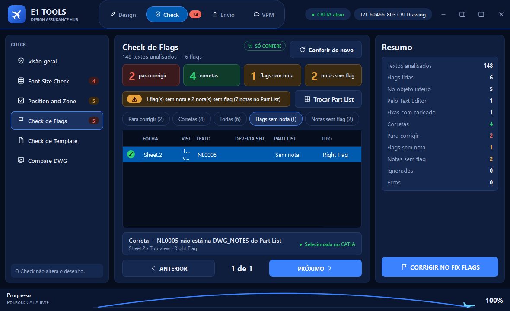
| Mensagem | Significado |
|---|---|
| Sem Part List: importe aqui ou no Position and Zone para comparar com a DWG_NOTES | Nada foi comparado ainda. |
| O Part List não tem a aba DWG_NOTES com a coluna Note Code: flags não comparadas | O arquivo serve para o Position and Zone, mas não tem as notas. |
| N notas no Part List: confira as flags para comparar | O Part List foi lido; falta rodar a conferência. |
| N flag(s) sem nota e N nota(s) sem flag | Há diferenças. Use os dois filtros. |
| Desenho e Part List batem: N notas, todas com flag | Tudo certo. |
| … Leitura parada antes do fim: pode faltar flag | A conferência foi parada; a lista de "notas sem flag" pode ter falsos positivos. |
O filtro Notas sem flag faz o caminho contrário: códigos da DWG_NOTES que não aparecem em nenhuma flag.
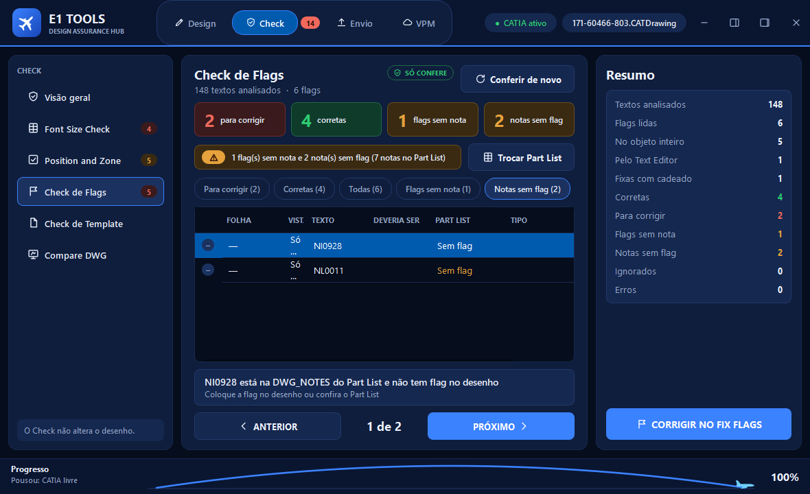
Uma nota sem flag não tem lugar no desenho: aparece como "Só no Part List", sem navegação. A tela sugere "Coloque a flag no desenho ou confira o Part List".
As diferenças com o Part List (flags sem nota e notas sem flag) entram no contador do Check de Flags e na Visão geral, junto com as flags para corrigir.
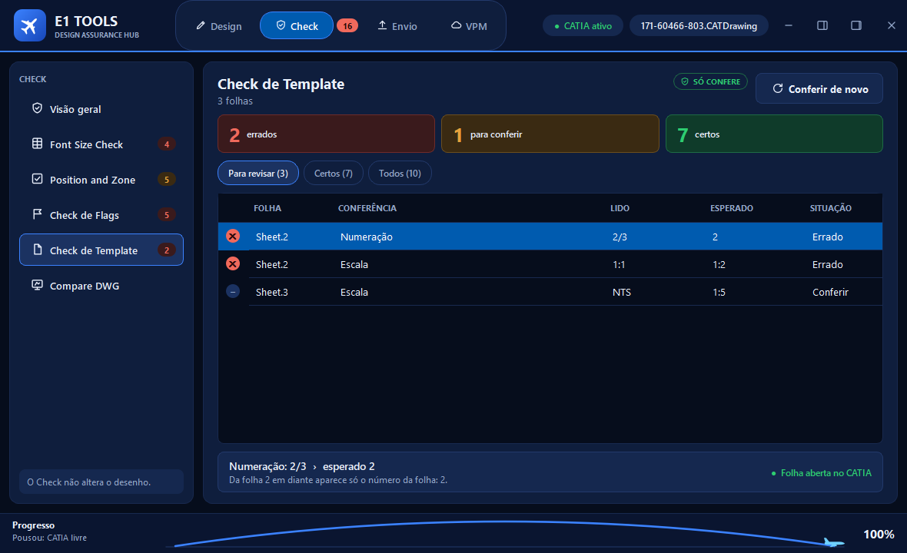
| Conferência | Regra |
|---|---|
| Numeração | Campo SHEET/OF: a primeira folha mostra 1/total; as outras, só o próprio número. |
| Total de folhas | O parâmetro No_of_Sheets, se existir, precisa ser igual ao número de folhas. |
| Formato | A etiqueta do formato precisa bater com o tamanho do papel. 3A0 e E3 são papel personalizado, sem medida de referência: ficam em Conferir. |
| Escala | O campo SCALE é comparado com as vistas da folha. Todas batem: Certo. Nenhuma bate: Errado. Só parte bate: Conferir. |
Na escala, não contam as vistas com ISOMETRIC, ISO, SECTION ou VIEW no nome, nem as grades de zona. A exceção é VIEW LOOKING (FWD, AFT etc.), que conta. PLAN VIEW fica fora. O nome do desenho não é conferido.
Os campos são achados pelo rótulo (SCALE e SHEET / OF), com o valor embaixo ou ao lado.
| Situação | Significado |
|---|---|
| Certo | Bate com a regra. |
| Errado | Não bate. A explicação diz o que era esperado. Entra no contador. |
| Conferir | O programa não tem como afirmar: campo não achado ("Não achei o campo SCALE nesta folha"), folha sem vista para comparar, escala que não é número (NTS), formato sem medida de referência. Não entra no contador da aba, mas aparece em amarelo na Visão geral. |
Limite conhecido: este check foi testado com uma legenda montada no arranjo das fotos do desenho 171-54397-801, não com o template real da rede.
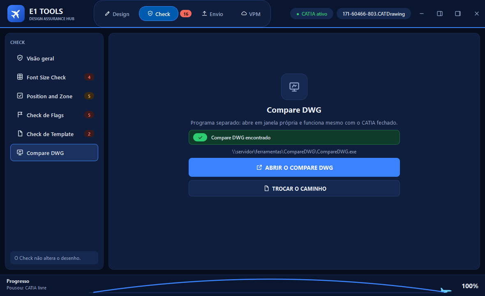
O caminho fica guardado em %APPDATA%\E1DWGTools\config.json, fora da pasta do HUB, e não se perde ao
atualizar o programa. Se o programa mudar de lugar, a tela mostra "Programa não encontrado nesse
caminho" e o botão vira ESCOLHER O CAMINHO DE NOVO.
Os Splits criam arquivos novos. O documento aberto não é dividido. Os dois mostram o tamanho de cada arquivo gerado comparado com o limite de envio de 200 MB.
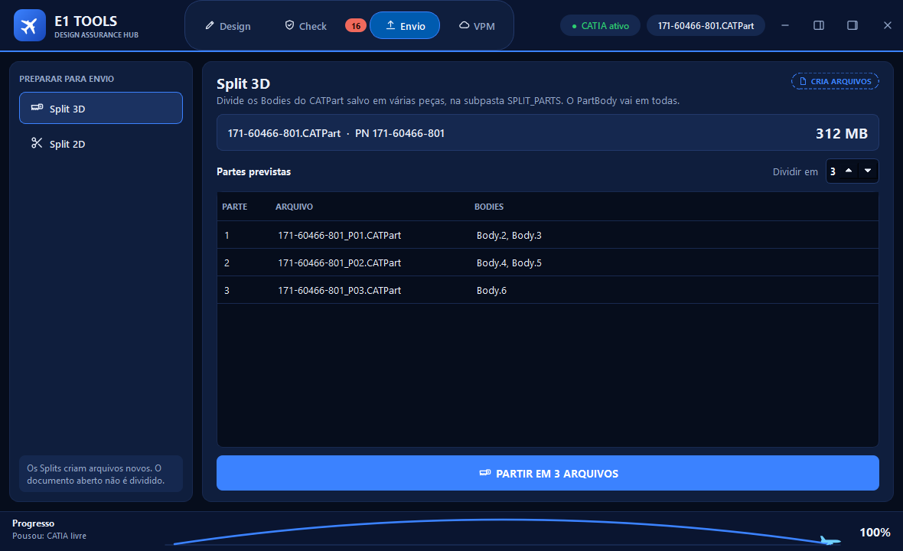
SPLIT_PARTS ao lado do CATPart;_P01, _P02…;| Aviso | Significado |
|---|---|
| Abra um CATPart. | O documento ativo não é uma peça. |
| Salve o CATPart antes de executar. | A peça nunca foi salva em disco. |
| Nenhum Body encontrado. / NENHUM BODY PARA DIVIDIR | A peça só tem o PartBody. |
| Acima de 200 MB (no resultado) | Esse arquivo ainda passa do limite de envio. Divida em mais partes. |
Depois de um erro ("Erro ao executar o SPLIT 3D"), a peça incompleta não fica aberta, e os alertas e a tela do CATIA voltam ao normal.
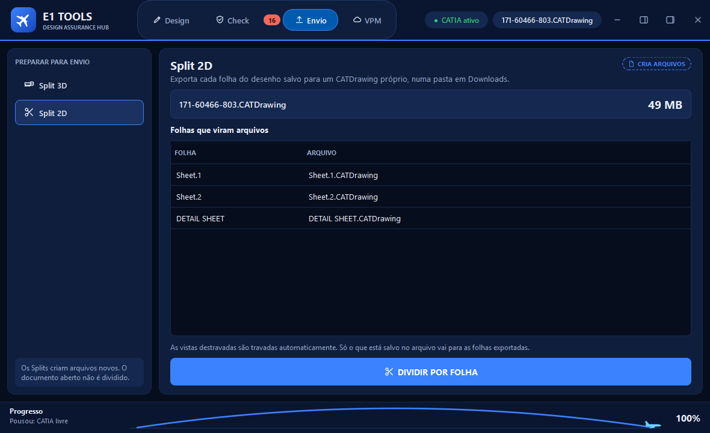
Downloads\171-60466-803\);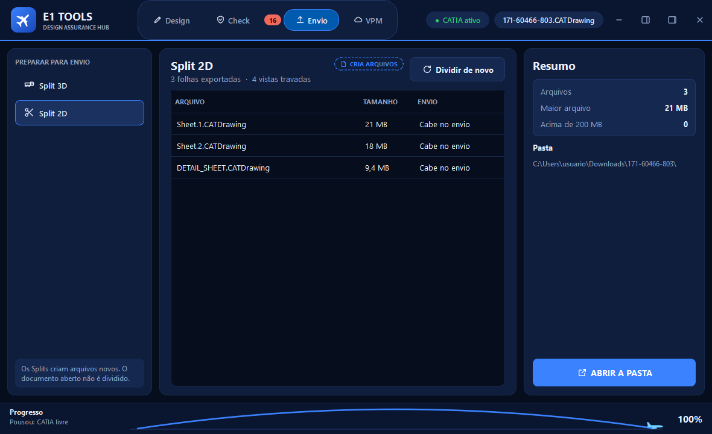
Avisos: "Abra um CATDrawing antes de executar.", "Salve o CATDrawing antes de executar a macro." e, no resultado, "Acima de 200 MB" para o arquivo que ainda passa do limite. Depois de um erro, a cópia incompleta não fica aberta.
A aba VPM cria PNs e atualiza o conteúdo de PNs no VPM web, pelo Microsoft Edge. É o porte da macro "VPM Tools unificado".
Atenção: nada desta aba foi testado no VPM de verdade, porque o VPM só abre na rede da empresa. As telas abaixo mostram a prévia com dados de exemplo. Criação e Upload alteram o VPM e não podem ser desfeitos pelo HUB.
%LOCALAPPDATA%\VPMTools, os mesmos da macro.| Status | Significado |
|---|---|
| PENDENTE | Ainda não rodou. |
| EM_EXECUCAO | Rodando agora. |
| CONFIRMADO | PN criado e achado no VPM depois do Create. |
| CONFIRMADO_HISTORICO_LOCAL | Já tinha sido criado antes (histórico local). Não foi criado de novo. |
| VALIDADO_SEM_CRIAR | Modo "só preencher e conferir": formulário conferido e cancelado. |
| CONFIRMADO_PELO_USUARIO_OU_HISTORICO | Conteúdo enviado e confirmado por você, ou já confirmado antes. |
| IGNORADO_HISTORICO_LOCAL | Esse mesmo arquivo já tinha sido enviado e confirmado. Não foi enviado de novo. |
| NAO_SOLICITADA / NAO_SOLICITADO | A tela não pediu essa etapa. |
| NAO_EXECUTADO | Não rodou porque o lote parou antes. |
| ERRO_ANTES_CREATE / ERRO_ANTES_UPLOAD | Deu erro antes de enviar. Nada foi enviado nessa etapa. |
| CRIACAO_INCERTA | O Create foi enviado e algo falhou depois. O PN pode ter sido criado. Confira no VPM antes de repetir. |
| UPLOAD_INCERTO | O Upload foi acionado e não foi confirmado. Confira no VPM antes de repetir. |
| REVISAO_NECESSARIA | Um lote anterior deixou a criação incerta. O HUB não repete: confira no VPM. |
Verde: concluído. Amarelo: em andamento ou não executado. Vermelho: erro ou incerto.
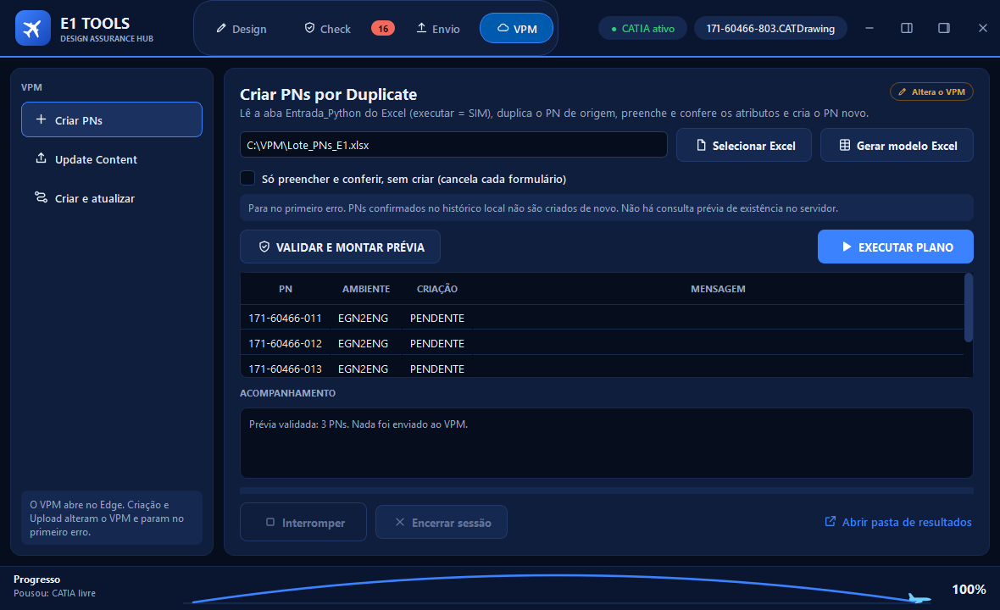
executar, pn_origem, ambiente, part_number, part_instance,
conc_version, conf_type, english_description, portuguese_description, type, origin,
production, design, calculated_weight_g, ata_code, dbt_code, drawing_class, class,
status, cpl, type_program, traceability;.py da macro antiga do VPM, tira o modelo de dentro
dele (sem executar a macro) e guarda para as próximas vezes.A prévia recusa o lote (e lista tudo o que precisa corrigir) quando: falta coluna ou ela está repetida, campo obrigatório vazio, PN novo igual ao de origem, PN repetido no lote, peso que não é número (use ponto decimal) ou Conc. Version que não é inteiro positivo.
Se uma opção do Excel não existir na lista do VPM, o lote para com "Opção inválida em (campo)", listando as opções disponíveis. Não há consulta prévia completa de existência do PN no servidor: o controle é o histórico local.
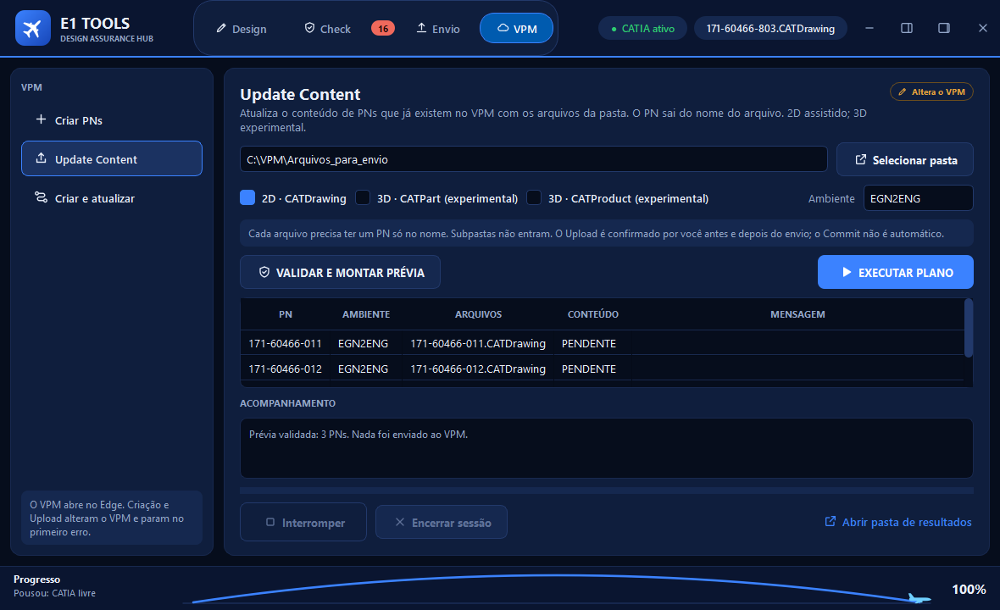
171-52382-001.CATDrawing,
SPD171-52382-001…). Nome sem PN, ou com dois, recusa a prévia;EGN2ENG. Só letras maiúsculas, números e sublinhado.Se o HUB não achar o documento na árvore ou o menu Update Content, ele grava um arquivo de diagnóstico e pede que você abra o menu à mão (só Edit › Update Content, parando na janela Source = CATIA V5) antes de clicar em Sim. Nesses casos nenhum Upload é enviado sem a sua confirmação.
O Upload é bloqueado se o documento ativo no CATIA mudar, se o documento for alterado depois da conferência, se o destino mudar ou se "Save as New Document" estiver marcado.
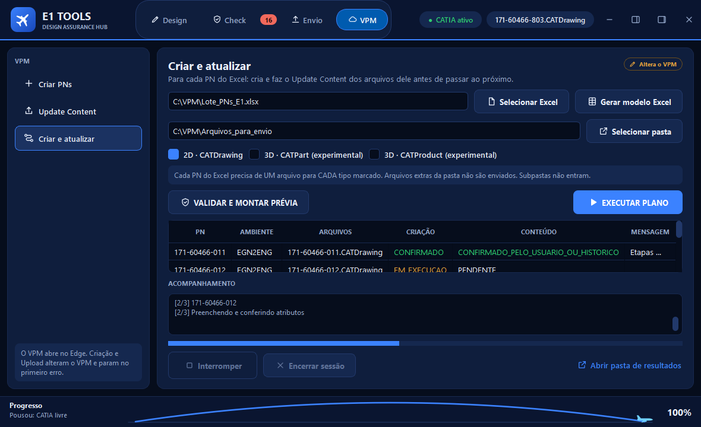
O ambiente de cada PN vem da coluna ambiente do Excel.
O programa fica numa pasta (por exemplo E1DWGTOOLS). Precisa de Python 3.10 ou mais novo.
Na pasta do programa, rode:
python verificar.py
O verificador não mexe no CATIA nem nos desenhos e pode rodar quantas vezes precisar. Ele:
No fim aparece TUDO CERTO. Para abrir, rode: python main_qt.py ou AINDA NÃO ESTÁ PRONTO. Nesse
caso, resolva os itens [ERRO] e rode de novo.
| Mensagem do verificador | O que fazer |
|---|---|
| arquivo: não existe. Crie e cole de: (link) | Crie o arquivo nesse caminho e cole o conteúdo do link. |
| arquivo: está em (outra pasta). Mova para a pasta certa. | O arquivo foi salvo no lugar errado. |
| arquivo: tem N linhas e devia ter M. Cole de novo de: (link) | A cópia veio incompleta. Copie de novo. |
| arquivo: o conteúdo está diferente. Cole de novo de: (link) | A cópia veio diferente. Copie de novo. |
| arquivo: salvo na codificação errada. Salve como UTF-8. | Salve de novo, escolhendo UTF-8. |
| Peça à TI para liberar pypi.org e files.pythonhosted.org… | A rede bloqueou a instalação das bibliotecas. |
| Peça à TI para instalar o Microsoft Visual C++ Redistributable. | Uma biblioteca precisa desse componente do Windows. |
| CATIA fechado. O HUB abre, mas as ferramentas precisam dele aberto. | Só um aviso. |
| Excel não encontrado… | O Position and Zone precisa do Excel para ler o Part List. |
Para atualizar no PC da empresa, copie arquivo por arquivo dos links do GitHub (branch
migracao-dwgtools) e rode python verificar.py no fim: ele aponta qualquer arquivo que ficou faltando
ou diferente. O caminho do Compare DWG, o OK manual do Position and Zone e os históricos do VPM ficam
fora da pasta do programa e não se perdem na atualização.
Se as macros do CATIA pararem de responder depois de usar o HUB (mesmo com ele fechado), rode:
python verificar.py --catia
Ele mostra o estado do CATIA (interação, alertas e tela ligados ou não, documentos e janelas abertos, documento ativo, itens selecionados e quantos Python, CATIA e Excel estão rodando), tira a seleção e religa alertas, tela e interação. O desenho não muda. Depois, clique na macro e, se não voltar, mande uma foto da tela.
A causa desse travamento ainda não foi encontrada: não se repetiu nos testes.
%APPDATA% e %LOCALAPPDATA% são pastas do seu usuário no Windows. Para abrir, digite o nome (com os
%) na barra de endereço do Explorer.
Em %APPDATA%\E1DWGTools\:
| Arquivo | Gravado por | Conteúdo |
|---|---|---|
config.json |
Compare DWG | Caminho do programa Compare DWG. |
poszone_ok.json |
Position and Zone | OK manual de cada posição, por desenho. Apagar zera todos os OK manuais deste PC. |
poszone_grade.txt |
Position and Zone, a cada mapeamento | De onde veio a grade de cada folha, posição das colunas e linhas, comparação com a grade desenhada, posição e zona de cada balão. Use quando uma zona parecer errada. |
update_vinculos.txt |
Update Template, a cada conversão | O que cada campo da legenda achou e recriou, e os textos da folha 1 depois da conversão. |
update_tempos.txt |
Update Template | Quanto cada fase da última conversão levou. Não aparece na tela. |
templates_lidos.json |
Update Template | Leitura guardada de cada template, para acelerar. Vale enquanto o arquivo do template tiver o mesmo tamanho e data. Pode ser apagado: é refeito na próxima conversão. |
Em %LOCALAPPDATA%\VPMTools\ (a mesma pasta da macro antiga):
| Arquivo | Conteúdo |
|---|---|
historico_criacao_vpm.json |
PNs criados (ou com criação iniciada). Não apague sem revisar o que já foi enviado. |
historico_upload_unificado.json |
Arquivos enviados por Update Content. Não apague sem revisar. |
sequencia_vpm_(data e hora).json |
Relatório de cada lote, com o status de cada PN. |
erro_unificado.txt |
Detalhe do último erro de lote. |
diagnostico_vpm.json, diagnostico_arvore_vpm.json, diagnostico_menu_vpm.json |
O que o HUB achou na página do VPM quando não conseguiu identificar o formulário, a árvore ou o menu. |
resultado_criacao_vpm.json |
A linha do VPM encontrada depois do último Create. |
perfil_edge_vpm\ |
Perfil do Edge que guarda o login do VPM. |
vpm_modelo.xlsx |
Modelo do Excel tirado da macro antiga. |
%TEMP%), a
partir do modelo _Callouts.xlsm da rede, e deixa aberta no Excel.Downloads\(PN)\. Split 3D: SPLIT_PARTS\, ao lado do CATPart.| Problema | O que fazer |
|---|---|
| O HUB diz "CATIA fechado" com o CATIA aberto | Espere alguns segundos ou clique em PROCURAR DE NOVO. Se continuar, feche e abra o HUB. |
| A ferramenta não libera com o desenho aberto | Confira o chip com o nome do documento no alto. Clique na janela do desenho no CATIA para ele ficar ativo. |
| "Item não encontrado: foi apagado ou o desenho foi fechado" | O item mudou depois da análise. Rode a ferramenta de novo. Renomear um item depois da análise também causa isso. |
| O Update Template deu erro no meio | Leia a mensagem. Se disser que o desenho pode ter ficado parcialmente convertido, feche sem salvar e abra de novo. |
| Zona errada no Position and Zone | Abra o poszone_grade.txt e veja de onde saiu a grade da folha. Se o mapeamento avisou "caminho de reserva", confira um balão de cada folha citada. |
| Callout com zona N/A | O CATIA não informou a posição da vista ou do texto, ou a folha não tem grade. O aviso do fim do mapeamento diz qual. |
| "As abas 'COMPONENT' e 'PSA' não foram encontradas" | O arquivo escolhido não é o Part List do SAP. |
| Check de Flags não compara com o Part List | O arquivo não tem a aba DWG_NOTES com a coluna Note Code. |
| Macros do CATIA travadas | python verificar.py --catia, veja a seção 7. |
| Lote do VPM com status INCERTO | Confira o PN no VPM antes de repetir. O HUB não repete sozinho uma criação ou Upload incerto. |